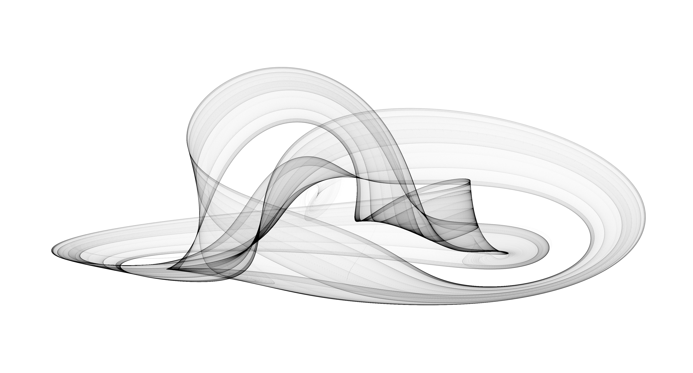

Halvorsen Attractor
The Halvorsen attractor is a 3-dimensional attractor produced by the following equation:
Halvorsen attractor
 Animated Halvorsen attractor
Animated Halvorsen attractor
External Links
A Symmetric Chaotic Flow, Sprott (2004)
Video: Halvorsen Chaotic Attractor